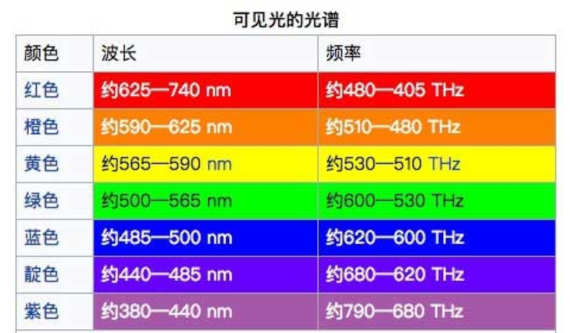
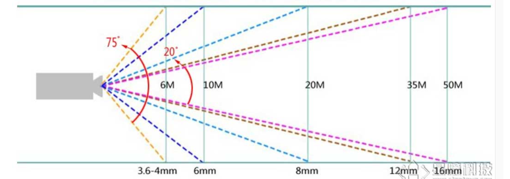
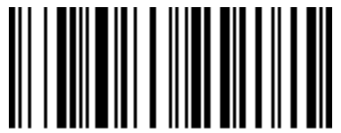

一、图像处理背景
1.1 什么是颜色
颜色就是不同波长的电磁波
1.2 LAB色域
Openmv查找色块算法使用LAB模式
Lab颜色空间中，L亮度；a的正数代表红色，负端代表绿色；b的正数代表黄色，负端代表兰色（墨水蓝，天蓝色）。不像RGB和CMYK色彩空间，Lab颜色被设计来接近人类视觉。因此，L分量可以调整亮度对，修改a和b分量的输出色阶来做精确的颜色平衡。
1.3 光源
保持一个稳定的光源是至关重要的，尤其在颜色算法中。亮度一变，整个颜色的值会变化的很大！
1.4 焦距
镜头焦距：是指镜头光学后主点到焦点的距离，是镜头的重要性能指标。镜头焦距的长短决定着拍摄的成像大小，视场角大小，景深大小和画面的透视强弱。当对同一距离远的同一个被摄目标拍摄时，镜头焦距长的所成的象大，镜头焦距短的所成的象小。注意焦距越长，视角越小。
二、Openmv图像处理方法
2.1 sensor模块
2.1.1 导入sensor
import sensor2.1.2 初始化摄像头
sensor.reset()2.1.3 设置图像模式
'''
可选参数：
- sensor.GRAYSCALE: 灰度图，每个像素8bit
- sensor.RGB565: 彩图，每个像素16bit
'''
sensor.set_pixformat(sensor.RGB565)2.1.4 设置图像尺寸
'''
可选参数太多，列举几个：
- sensor.VGA: 640x480
- sensor.QVGA: 320x240
- sensor.QQVGA: 160x120
- sensor.QQQVGA: 80x60
'''
sensor.set_framesize(sensor.QVGA)2.1.5 提取图像区域
'''
设置窗口ROI
- Region Of Interest，感兴趣区，就是在要处理的图像中提取出的要处理的区域
其中，roi格式为(x, y, w, h)的tupple
- x:ROI区域中左上角的x坐标，从0开始计数，由左往右增大
- y:ROI区域中左上角的y坐标，同样从0开始计数，由上往下增大
- w:ROI的宽度
- h:ROI的高度
'''
sensor.set_windowing((640, 80)) #取图像中间的640*80区域2.1.6 图像翻转
- 水平翻转
sensor.set_hmirror(True)- 垂直翻转
sensor.set_vflip(True)- 转置
sensor.set_transpose(True)2.1.7 自动增益
'''
- 自动增益，开启（True）或者关闭（False）
- 在使用颜色追踪时，需要关闭自动增益
'''
sensor.set_auto_gain(False) 2.1.8 自动白平衡
'''
- 自动白平衡开启（True）或者关闭（False）
- 在使用颜色追踪时，需要关闭自动白平衡
'''
sensor.set_auto_whitebal(False) 2.1.9 跳帧
'''
- 跳过n张照片，等待感光元件变稳定
'''
sensor.skip_frames(10)2.1.10 拍照
'''
- sensor.snapshot() 拍摄一张照片
- 返回一个image对象
'''
img = sensor.snapshot()2.1.11 获取传感器窗口宽高
- 图像宽度
sensor.width()- 图像高度
sensor.height()2.2 image模块
2.2.1 获取/设置像素值
- 获取像素点
'''
- 对于灰度图: 返回(x,y)坐标的灰度值
- 对于彩色图: 返回(x,y)坐标的(r,g,b)的tuple
'''
image.get_pixel(x, y)- 设置像素值
'''
- 对于灰度图: 设置(x,y)坐标的灰度值
- 对于彩色图: 设置(x,y)坐标的(r,g,b)的值
'''
image.set_pixel(x, y, pixel)举例：
img = sensor.snapshot()
img.get_pixel(10,10)#获取坐标（10，10）处的灰度值/rgb
img.set_pixcel(10,10,(255,0,0))#设置坐标(10,10)的像素点为红色(255,0,0)2.2.2 获取拍摄图像宽高
- 图像宽度
image.width()- 图像高度
image.height()- 图像尺寸
'''
- 返回图像的大小(byte)，其值等于 长x宽
'''
image.size()2.2.3 获取图像格式
'''
- 灰度图返回 sensor.GRAYSCALE
- 彩色图返回 sensor.RGB565
'''
image.format()2.2.4 图像运算
- 取反，对于二值化的图像，0(黑)变成1(白)，1(白)变成0(黑)
image.invert()- 与另一个图片进行与非（NAND）运算
- 先与后非
image.nand(image)- 与另一个图片进行或非（NOR）运算
- 先或后非
image.nor(image)- 与另一个图片进行异或（XOR）运算
- 相同为0，相异为1
image.xor(image)- 与另一个图片进行同或（XNOR）运算
- 相同为1，相异为0
image.xnor(image)- 减法，从这张图片减去另一个图片，经常用来做==移动检测==
image.difference(image)2.2.5 Statistics 统计信息
2.2.5.1 创建Statistics对象
'''
- roi必须显示输入，否则不知道统计哪一块的像素信息
'''
image.get_statistics(roi=Auto)2.2.5.2 Statistics方法
- 返回灰度均值
statistics.mean()- 返回灰度中值
statistics.median()- 返回灰度均值
statistics.mean()- 返回灰度众数
statistics.mode()- 返回灰度标准差
statistics.stdev()- 返回灰度最值
statistics.max()
statistics.min()2.2.6 Blob 色块信息
2.2.6.1 创建Blob对象
'''
- thresholds 为目标颜色阈值，可以是多个阈值构成的列表，即同时查找多种颜色
- roi 感兴趣区域
- x_stride 查找某色块时需要跳过的x像素的数量（有点卷积步长的感觉）
- y_stride 查找某色块时需要跳过的y像素的数量
- invert 反转阈值操作，识别阈值之外的目标
- area_threshold 面积阈值，色块的面积，即方框面积
- pixels_threshold 像素个数阈值，方框内的阈值像素个数
- merge 若为True，合并待识别的多种目标颜色色块。如，当目标颜色为红色和蓝色时，红色的code为0001，蓝 色的code为0010，当merge为True时，若色块中同时检测到两种颜色，该blob.ocde的返回值为0011
（感觉不太正确）
- margin 边界，如果设置为1，那么两个blob如果间距1一个像素点会被合并
'''
# 返回的是blob列表
blobs=image.find_blobs(
thresholds=[(),()],
# 必须是二维列表！元素可以是列表，也可以是元组
# 若为灰度图，元组由最小最大值组成(g_l,g_h)
# 若为RGB565,元组为LAB阈值
roi=Auto,
x_stride=2,
y_stride=1,
invert=False,
area_threshold=10,
pixels_threshold=10,
merge=False,
margin=0,
)2.2.6.2 blob方法
- 返回色块外框信息
blob.rect() # 外框(x,y,w,h)
blob.x()
blob.y()
blob.w()
blob.h()
blob.cx()
blob.cy()- 返回色块code
blob.code() - 返回色块旋转角度
blob.rotation() # 单位为弧度- 返回色块外框面积
blob.area() - 返回色块内阈值像素个数
blob.pixels()- 返回色块密度
- 密度越高，目标锁定越好
blob.density()2.2.7 绘图
2.2.7.1 画直线
'''
- line_tuple 的格式是(x0, y0, x1, y1)，意思是(x0, y0)到(x1, y1)的直线
- color 显示赋值，可以是灰度值(0-255)，或者是彩色值(r, g, b)的tupple，默认白色
- thickness 设置直线粗细
'''
image.draw_line(line_tuple, color=(255,0,0), thickness=1)2.2.7.2 画矩形
'''
- rect_tuple 的格式是 (x, y, w, h)，含义同ROI
- color
- thickness
- fill 若为True，用color填充矩形
'''
image.draw_rectangle(rect_tuple, color=(0,0,255), thickness=1, fill=False)2.2.7.3 画圆
'''
- circle_tuple的格式(x, y, radius)，中心坐标，半径
- color
- thickness
- fill
'''
image.draw_circle((x, y, radius), color=White, thickness=1, fill=False)2.2.7.4 画十字
'''
- (x,y) 十字中心位置
- size 十字延伸长度
- color
- fill
'''
image.draw_cross((x, y), size=5, color=(255,0,0)), thickness=1, fill=False)2.2.7.5 画箭头
'''
- (x0, y0)到(x1, y1)的箭头
- color
- thickness
'''
image.draw_arrow((x0, y0, x1, y1), color=(255,0,0), thickness=1 )2.2.7.6 写字
'''
- x,y是坐标
- text是要写的字符串,使用转义字符会产生相应变化
'''
image.draw_string(x, y, text, color=White) 三、应用
3.1 AprilTag标记跟踪及测距
3.1.1 AprilTag识别
- 可得到Tag相对于相机的xyz换算坐标及旋转角度
'''
- roi，可指定，但是隔一段时间没识别到Tag会报错，中断程序运行
- families，Tag家族，默认image.TAG36H11，其识别精度最高
- fx, fy, cx, cy 决定位置及旋转角度
'''
image.find_apriltags(roi, families=image.TAG36H11, fx, fy, cx, cy)3.1.2 AprilTag类方法
- 返回Tag边框信息
apriltag.rect() # 矩形元组（x,y,w,h）
apriltag.x()
apriltag.y()
apriltag.w()
apriltag.h()
apriltag.cx()
apriltag.cy()- 返回Tag标签ID
apriltag.id() # TAG36H11 -> 0 to 586- 返回Tag换算位置坐标
apriltag.x_translation()
apriltag.y_translation()
apriltag.z_translation()- 返回Tag旋转角度
apriltag.x_rotation()
apriltag.y_rotation()
apriltag.z_rotation()3.1.3 例程
'''
- 输出的姿态的单位是弧度，可以转换成角度
- 位置的单位及大小跟参考物体有关，需要等比例换算
- f_x 是x的像素为单位的焦距,等于2.8/3.984*sensor.width()
- f_y 是y的像素为单位的焦距,等于2.8/2.952*sensor.height()
- c_x 是图像的x中心位置
- c_y 是图像的y中心位置
'''
import sensor, image, time, math
sensor.reset()
sensor.set_pixformat(sensor.RGB565)
sensor.set_framesize(sensor.QQVGA) # we run out of memory if the resolution is much bigger...
sensor.skip_frames(30)
sensor.set_auto_gain(False) # must turn this off to prevent image washout...
sensor.set_auto_whitebal(False) # must turn this off to prevent image washout...
clock = time.clock()
f_x = (2.8 / 3.984) * 160 # 默认值
f_y = (2.8 / 2.952) * 120 # 默认值
c_x = 160 * 0.5 # 默认值(image.w * 0.5)
c_y = 120 * 0.5 # 默认值(image.h * 0.5)
k=-4 # z轴实际距离 / Tz ，x，y轴系数应该是一样的计算方法
def degrees(radians):
return (180 * radians) / math.pi
while(True):
clock.tick()
img = sensor.snapshot()
for tag in img.find_apriltags(fx=f_x, fy=f_y, cx=c_x, cy=c_y): # 默认为TAG36H11
img.draw_rectangle(tag.rect(), color = (255, 0, 0))
img.draw_cross(tag.cx(), tag.cy(), color = (0, 255, 0))
print_args = (tag.x_translation(), tag.y_translation(), tag.z_translation(), \
degrees(tag.x_rotation()), degrees(tag.y_rotation()), degrees(tag.z_rotation()))
# 位置的单位是未知的，旋转的单位是角度
print('z轴距离：'+str(print_args[2]*k)+'cm')
#print("Tx: %f, Ty %f, Tz %f, Rx %f, Ry %f, Rz %f" % print_args)
print(clock.fps())3.2 NCC模板匹配
3.2.1 NCC简介
图像匹配的方法主要有三种：基于灰度，基于特征，基于变换域
NCC (normalized cross correlation) 算法，归一化互相关匹配法，是基于图像灰度信息的匹配方法
NCC算法可以有效降低光照对图像比较结果的影响
NCC最终结果在0到1之间，容易量化比较结果，只要给出一个阈值就可以判断结果的好与坏
缺点：只能匹配与模板图片大小和角度基本一致的图案，可从多角度多大小保存多个模板去克服
3.2.2 相关函数
- 导入模板图像
'''
- 模板图像必须为灰度的pgm图像，IDE存取的是bmp格式，可在https://convertio.co/zh/bmp-pgm/在线转换
- path 为导入模板图像路径，一般将模板图像存在同一文件夹下，直接写相对路径（文件名.pgm）
'''
image.Image(path)- 模板匹配
'''
- template 是进行匹配的导入的模板
- threshold 相似度阈值，越大准确率越高，但匹配速率会降低
- roi
- step 查找模板时跳过的像素数量，跳过像素可提高算法运行速度
- search 模板匹配算法，有 image.SEARCH_DS 和 image.SEARCH_EX，一般选用image.SEARCH_EX，匹配更 为全面（若模板位于图像边缘周围，image.SEARCH_DS可能无法成功搜索），但运行速度会低一点
'''
image.find_template(template, threshold, roi, step=2, search=image.SEARCH_EX)3.2.3 例程
import time, sensor, image
from image import SEARCH_EX, SEARCH_DS
sensor.reset()
sensor.set_contrast(1) # 设置对比度
sensor.set_gainceiling(16) # 设置增益上限
sensor.set_framesize(sensor.QQVGA)
sensor.set_pixformat(sensor.GRAYSCALE)
# 用列表存下多个模板文件名
templates = ["/0.pgm", "/1.pgm", "/2.pgm", "/6.pgm"] #保存多个模板
clock = time.clock()
while (True):
clock.tick()
img = sensor.snapshot()
# 遍历列表进行模板匹配
for t in templates:
template = image.Image(t)
r = img.find_template(template, 0.70, step=4, search=SEARCH_EX)
if r:
img.draw_rectangle(r)
print(t) #打印模板名字
3.3 扫码
3.3.1 二维码
3.3.1.1 样例
3.3.1.2 调用函数
- 二维码读取
'''
- [roi]可不写
'''
image.find_qrcodes([roi])- 畸变矫正，去除镜头造成的图像鱼眼效果
'''
- 消解镜头的桶形畸变,得到一个更为平展的二维码
- strength 该值确定了对图像进行去鱼眼效果的程度
- zoom 对图像进行缩放的倍数
- x_corr/y_corr 一般不用，没了解
'''
image.lens_corr(strength=1.8, zoom=1.0, x_corr=0.0, y_corr=0.0)3.3.1.3 qrcode类方法
- 常见，返回边框信息
qrcode.rec()
qrcode.x()
qrcode.y()
qrcode.w()
qrcode.h()- 返回二维码信息
qrcode.payload()3.3.1.4 例程
import sensor, image
sensor.reset()
sensor.set_pixformat(sensor.RGB565)
sensor.set_framesize(sensor.QQVGA) # can be QVGA on M7...
sensor.skip_frames(30)
sensor.set_auto_gain(False) # must turn this off to prevent image washout...
while(True):
img = sensor.snapshot()
img.lens_corr(1.8) # strength of 1.8 is good for the 2.8mm lens.
for code in img.find_qrcodes():
print(code)
3.3.2 条形码
3.3.2.1 样例
3.3.2.2 调用函数
- 一维码读取
'''
- 同样，[roi]可不写，进行全图扫描
'''
image.find_barcodes([roi])3.3.2.3 barcode类方法
- 常见，返回边框信息
barcode.rec()
barcode.x()
barcode.y()
barcode.w()
barcode.h()- 返回条形码信息
barcode.payload()- 返回条形在图像中被扫描的次数
barcode.quality()3.3.2.4 例程
import sensor, image, time, math
sensor.reset()
sensor.set_pixformat(sensor.GRAYSCALE)
sensor.set_framesize(sensor.VGA) # High Res!
sensor.set_windowing((640, 80)) # V Res of 80 == less work (40 for 2X the speed).
sensor.skip_frames(30)
sensor.set_auto_gain(False) # must turn this off to prevent image washout...
sensor.set_auto_whitebal(False) # must turn this off to prevent image washout...
clock = time.clock()
while(True):
clock.tick()
img = sensor.snapshot()
codes = img.find_barcodes()
for code in codes:
img.draw_rectangle(code.rect())
print_args = (code.payload(), (180 * code.rotation()) / math.pi, code.quality(), clock.fps())
print("Payload \"%s\", rotation %f (degrees), quality %d, FPS %f" % print_args)3.3.3 Datamatrix
基本没遇到，懒得写了
3.4 巡线
3.4.1 无岔口
四、pyb外设模块
4.1 LED调用
- 需要导入模块
from pyb import LED- 可用灯
LED(1) -> 红LED
LED(2) -> 绿LED
LED(3) -> 蓝LED
LED(4) -> 红外LED，两个- 使用方法
led = LED(1) # 红led
led.on()#亮
led.off()#灭4.2 时间相关函数
- 延时函数
pyb.delay(50) # 延时 50 毫秒
pyb.udelay(us) # 延时微秒- 计录使用时间
pyb.millis() # 插件重置后，返回毫秒数- 算时间差
'''
- 计算当前时刻，与start时刻的时间差
'''
start = pyb.millis()
pyb.elapsed_millis(start)4.3 Servo控制舵机
- 导入模块
from pyb import Servo- 创建舵机对象
'''
- Servo(1) -> P7 (PD12)
- Servo(2) -> P8 (PD13)
- Servo(3) -> P9 (PD14)
'''
s1 = Servo(1) # servo on position 1 (P7)- 控制角度
s1.angle(45) # move to 45 degrees
s1.angle(-60, 1500) # move to -60 degrees in 1500ms
s1.speed(50) # 连续运动时才需要设置速度4.4 UART通信
- 引脚
| 名称 | 引脚 |
|---|---|
| UART 3 RX | P5 (PB11) |
| UART 3 TX | P4 (PB10) |
| UART 1 RX | P0 (PB15) |
| UART 1 TX | P1 (PB14) |
- 导入模块
from pyb import UART- 初始化串口
uart = UART(3, 9600)- 传出数据
uart.write("Hello World!\r")- 读取数据
UART.readline() # 读一行
UART.any() # 返回已经读入的字节数4.5 光源扩展
- 导包
import time
from pyb import Pin, Timer- 定义变量并设置亮度
# 50kHz pin6 timer2 channel1
light = Timer(2, freq=50000).channel(1, Timer.PWM, pin=Pin("P6"))
light.pulse_width_percent(100) # 控制亮度 0~100
while (True):
time.sleep_ms(1000)
五、图像预处理
5.1 畸变校正
- 去除镜头的鱼眼效果
- 畸变校正函数
'''
- strength 确定去鱼眼效果的程度
- zoom 对图像进行缩放的倍数
'''
image.lens_corr(strength=1.8, zoom=1.0, x_corr=0.0, y_corr=0.0)
# 使用例子
img = sensor.snapshot().lens_corr(strength = 1.8, zoom = 1.0)
5.2 二值化
- 根据阈值将图像划分为二值图像
- 二值化函数
'''
- thresholds 将该阈值范围内的像素设置为白色
- 对于灰度图，该阈值元组需要包含两个值，最小灰度和最大灰度
- 对于RGB565图，阈值元组需要有六个值，LAB三个通道的范围
- invert 翻转二值化结果，将黑变白，白变黑
'''
image.binary([thresholds], invert=False)
# 例子，针对RGB565图像中的红色部分进行二值化
img.binary([(24, 57, 22, 83, 39, -10)],invert=True)5.3 直方图
- 没看明白到底有啥用
- 调用函数
img.get_histogram(bins=8)
# 例子
while(True):
clock.tick()
img = sensor.snapshot()
# Gets the grayscale histogram for the image into 8 bins.
# Bins defaults to 256 and may be between 2 and 256.
print(img.get_histogram(bins=8))
print(clock.fps())5.4 图像滤波
5.4.1 自适应直方图均衡
改善图像对比度
自适应直方图均衡将图像分割成区域，然后均衡这些区域中的直方图，以改善图像对比度
使用效果
调用函数
'''
- adaptive 设置为True，将在图像上运行自适应直方图均衡化
- clip_limit 用于限制自适应直方图均衡的对比度， 使用较小的值(例如10)可以生成良好的对比度受限图像
'''
image.histeq(adaptive=False, clip_limit=-1)
# 例子
img = sensor.snapshot().histeq(adaptive=True, clip_limit=3)
print(clock.fps())5.4.2 中值滤波
- 在保留边缘的条件下，中值滤波是用来平滑表面的最佳滤波，但是运行速度极慢
- 调用函数
'''
- Size 是内核大小。取1是3x3内核，取2是5x5内核或更大内核
- percentile 控制内核中所使用值的百分位数，默认每个像素使用相邻的第五十个百分位数（中心）替换
- threshold 设置为True，启动图像的自适应阈值处理，根据环境像素的亮度（核函数周围的像素的亮度有关）， 将像素设置为1或者0
'''
median(size, percentile=0.5, threshold=False)
# 例子
img.median(1, percentile=0.5)5.4.3 中点滤波
- 跟中值滤波有区别，没看懂！！！
- 调用函数
'''
- Size 内核大小
- bias 图像混合的程度
- threshold 设置为True，启动图像的自适应阈值处理，根据环境像素的亮度（核函数周围的像素的亮度有关）， 将像素设置为1或者0
'''
image.midpoint(size, bias=0.5, threshold=False)
# 例子
img.midpoint(1, bias=0.5)5.4.4 高斯滤波
- 平滑图像
- 使用效果
- 调用函数
'''
- size
- unsharp 设置为True，不仅进行高斯滤波操作，还执行非锐化掩模操作，提高边缘的图像清晰度
- mul 用来与卷积像素结果相乘的数字
- add 与卷积结果相加的数字
- threshold 设置为True，启动图像的自适应阈值处理，根据环境像素的亮度（核函数周围的像素的亮度有关）， 将像素设置为1或者0
'''
image.gaussian(size, unsharp=False, mul, add=0, threshold=False)5.4.5 自定义卷积函数
- 通过自行设计过滤器内核对图像进行卷积
- 使用函数
'''
- size 设置内核大小，内核的大小控制为((size*2)+1)x((size*2)+1)像素
- kernel 内核，可为一个元组或一个取值[-128:127]的列表
- mul
- add
- threshold
'''
image.morph(size, kernel, mul, add=0, threshold=False)
# 使用例子
kernel_size = 1 # 3x3==1, 5x5==2, 7x7==3, etc.
kernel = [-2, -1, 0, \
-1, 1, 1, \
0, 1, 2]
img = sensor.snapshot()
# Run the kernel on every pixel of the image.
img.morph(kernel_size, kernel)